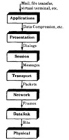

If two turn-key transaction processing systems are being compared, the application interface is the SUT level and the requests at this level, namely, the transactions, would form the basis of workload. The workload could be described by specifying the frequency of various types of transactions or the most frequent transaction. The debit-credit workload described in Section 4.6.7 is an example of the workload to be used for such a study.
It should be obvious that the idea of a service interface level can be applied to other types of computer systems. The following example shows its application to computer networks.
- Example 5.1 Consider the problem of selecting or designing the work-load to compare two networks. In the literature, the term network is used loosely to mean anything from a cable between two computers to networking applications, such as mail, that allow communications between several computers. One way to represent the hierarchy of levels in this case is to use the seven layers identified by the ISO/OSI reference model as shown in Figure 5.3. These layers and the corresponding workloads are given next. Readers not familiar with networking terminology should see a networking textbook such as Tanenbaum (1988).

FIGURE 5.3 Workloads corresponding to the seven layers of the ISO/OSI reference model for computer networks.
- 1. Physical Layer: This layer deals with the transmission of individual bits over the physical medium, which may be a twisted-pair wire, a cable, or a fiber-optic link. The key service provided by this layer is the transmission of a bit. In some networks, the physical layer deals with a group of bits called symbols. Thus, the workload to compare two links should match the frequency of various symbols or bit patterns observed on real networks.
- 2. Datalink Layer: This layer deals with the transmission of frames over a single link. The workload to compare two datalink protocols would require specifying the characteristics of frames transmitted, such as their lengths and their arrival rates. On links that connect multiple stations, for example, on local-area networks, one would also want to specify the source-destination matrix.
- 3. Network Layer: This layer routes packets from a given source node to a given destination over multiple links. The workload in this case would require specifying the source-destination matrix, the distance between source and destination, and the characteristics of packets transmitted.
- 4. Transport Layer: This layer deals with the end-to-end aspects of communication between the source and the destination nodes. The services provided include segmentation and reassembly of large messages. The workload would consist of specifying the frequency, sizes, and other characteristics of various messages.
- 5. Session Layer: The complete dialog between the user processes on the two end systems is called a session. The session layer provides services related to the initiation, maintenance, and disconnection of the sessions. The workload for the session layer would thus include the frequency and duration of various types of sessions.
- 6. Presentation Layer: This layer provides data compression and security. The workload for this layer would consist of specifying the frequency of various types of security and data compression requests.
- 7. Application Layer: This layer consists of user applications such as mail, file transfer, and virtual terminal. The workload at this layer would consist of specifying the frequency of various types of applications and their associated characteristics.
Thus, the choice of workload depends upon the layer at which the networks are being compared. While a typical mail session may be the right workload to compare two mail systems, it may not be appropriate to compare two fiber-optic links.
The following example illustrates the application of the services concepts to the analysis of an off-line backup storage system using magnetic tape drives.
- Example 5.2 A magnetic tape backup system consists of several tape data systems, each containing several tape drives. The drives have separate read and write subsystems. Each subsystem makes use of magnetic heads. Thus, starting from a high level and moving down to lower levels, the services, factors, metrics, and workloads are as follows:
- 1. Backup System:
- (a) Services: Backup files, backup changed files, restore files, list backed-up files.
- (b) Factors: File system size, batch or background process, incremental or full backups.
- (c) Metrics: Backup time, restore time.
- (d) Workload: A computer system with files to be backed up. Vary frequency of backups.
- 2. Tape Data System:
- (a) Services: Read/write to the tape, read tape label, autoload tapes.
- (b) Factors: Type of tape drive.
- (c) Metrics: Speed, reliability, time between failures.
- (d) Workload: A synthetic program generating representative tape I/O requests.
- 3. Tape Drives:
- (a) Services: Read record, write record, rewind, find record, move to end of tape, move to beginning of tape.
- (b) Factors: Cartridge or reel tapes, drive size.
- (c) Metrics: Time for each type of service, for example, time to read record and to write record, speed (requests per unit time), noise, power dissipation.
- (d) Workload: A synthetic program exerciser generating various types of requests in a representative manner.
- 4. Read/Write Subsystem:
- (a) Services: Read data, write data (as digital signals).
- (b) Factors: Data-encoding technique, implementation technology (CMOS, TTL, and so forth).
- (c) Metrics: Coding density, I/O bandwidth (bits per second).
- (d) Workload: Read/write data streams with varying patterns of bits.
- 5. Read/Write Heads:
- (a) Services: Read signal, write signal (electrical signals).
- (b) Factors: Composition, interhead spacing, gap sizing, number of heads in parallel.
- (c) Metrics: Magnetic field strength, hysteresis.
- (d) Workload: Read/write currents of various amplitudes, tapes moving at various speeds.
5.2 LEVEL OF DETAIL
After the service interface of the SUT has been identified and a list of services has been made, the next step in the workload selection is to choose the level of detail in recording (and thus reproducing) the requests for these services. A workload description may be as long as a time-stamped record of all requests or it can be as short as the single most commonly used request. A list of possibilities is as follows:
- 1. Most frequent request
- 2. Frequency of request types
- 3. Time-stamped sequence of requests
- 4. Average resource demand
- 5. Distribution of resource demands
The least detailed alternative is to select the most frequently requested service and use it as the workload. While this may not provide enough information about the system, this is commonly used as the initial workload. The addition instruction to compare early ALUs, various kernels to compare processors, and the debit-credit benchmark to compare transaction processing systems are examples of this approach. It is particularly valid if one type of service is requested much more often than others or is a major consumer of resources in the system.
The second alternative is to list various services, their characteristics, and frequency. The instruction mixes are examples of this approach. If the performance of a service depends upon the context, that is, on the services required in the past, the set of services that are expected to be context free are more appropriate than the individual services. History-sensitive mechanisms, such as caching in computer systems, often make this grouping necessary.
The third alternative is to get a time-stamped record (called a trace) of requests on a real system and use it as a workload. The problem with this alternative is that it may be too detailed. It is certainly inconvenient for analytical modeling. Also, for simulation it may require exact reproduction of component behavior to maintain the timing relationships. The advantages and disadvantages of trace-driven simulations are further discussed in Section 24.5.
){kind=link}
){kind=link}